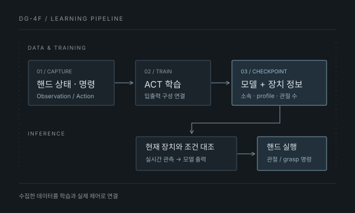

TESOLLO DG-4F · MIMICX
로봇 핸드 데이터를
학습에서 실제 실행까지
DG-4F 로봇 핸드 학습 파이프라인
수집된 핸드 데이터를 학습·추론·실제 핸드 실행으로 연결했습니다.
01 / GOAL & MY ROLE
제어하던 손을,
학습하는 시스템으로
기존 시스템은 Manus Glove로 Tesollo DG-4F를 제어하고 핸드 상태를 수집할 수 있었습니다. 이 데이터를 학습 화면에서 선택하고, 학습된 모델의 출력을 실제 핸드에 보내는 흐름에는 추가 연결이 필요했습니다.
저는 기존 제어 기반 위에서 데이터 저장 구조, 학습 입출력, 체크포인트의 장치 정보, 실시간 추론 경로를 확장했습니다. 실제 데이터를 수집해 학습과 추론을 시도하고, 각 단계에서 발생한 문제를 분석·수정하며 동작을 확인했습니다.
Manus SDK·skeleton·retargeting 기반 제어는 기존 구현을 사용했습니다.

02 / SYSTEM FLOW
데이터의 소속을
실행 장치까지 유지
수집한 핸드 상태와 명령을 손의 좌우에 맞는 학습 항목으로 변환했습니다. 관절 위치·속도를 관측으로, 관절 목표와 grasp 명령을 동작으로 연결했습니다.
체크포인트에는 손의 좌우, 장치 profile, 관절 수, 선택한 입출력 구성을 함께 보존했습니다. 추론에서는 이 구성과 현재 연결 장치를 대조한 뒤 모델 출력을 해당 핸드로 전달하도록 했습니다.
장갑 입력으로 움직이는 텔레오퍼레이션과 학습된 모델이 출력을 생성하는 추론은 별도의 실행 경로입니다.
Checkpoint
- 손의 좌우 HAND SIDE
- 장치 profile PROFILE
- 관절 수 JOINT COUNT
- 선택한 입출력 INPUT / OUTPUT
실제 로봇 핸드
관절 목표 또는 grasp 명령 전달
03 / PROBLEM & INVESTIGATION
데이터에는 있던 손이,
출력에서 사라졌습니다.
양팔 자세와 양손 관절을 함께 학습할 때 예측 24차원과 정답 60차원이 맞지 않아 학습이 중단됐습니다. 해당 정답은 양팔 자세 24차원과 양손 관절 36차원으로 구성돼 있었습니다.
- 입출력 대조
학습 정답에는 손 관절 36차원이 포함돼 있었습니다. 데이터 전체에서 손 값이 빠진 문제와 구분했습니다.
- 표현 변환 확인
모델은 팔 회전에 6D 표현을 사용합니다. 내부 출력 54차원이 팔 회전을 행렬로 복원한 뒤 60차원이 되는 것은 정상입니다.
- 유실 구간 확인
팔 자세를 복원한 결과만 남기는 경로에서 손에 해당하는 나머지 출력이 제거돼, 24차원만 손실 계산에 전달되고 있었습니다.
차원은 로봇 자유도(DOF)가 아닌 action 벡터의 원소 수입니다.
모델 내부 표현
54D양팔 위치 6 + 6D 회전 표현 12 + 양손 관절 36
기대하는 출력 · 정답
60D양팔 위치 6 + 회전행렬 18 + 양손 관절 36
오류가 난 출력
24D팔 자세만 남아 정답과 차원 불일치
04 / MODIFICATION
팔 자세는 변환하고,
손 출력은 보존하도록
팔 자세에 해당하는 부분만 변환한 뒤, 변환 대상이 아닌 손 출력을 다시 결합했습니다. 학습 손실 계산과 모델의 동작 선택 경로에서 혼합 출력의 차원이 유지되도록 수정했습니다.
양팔 자세 18 + 양손 관절 36 54D
양팔 자세 24 24D
양손 관절 36차원은 출력에서 제거
예측 24D ≠ 정답 60D
양팔 자세 18 + 양손 관절 36 54D
양팔 자세 24 + 양손 관절 36 60D
양손 관절 36차원을 변환 후에도 보존
예측 60D = 정답 60D
이 비교는 양팔 자세와 양손 관절을 함께 학습한 사례의 구성입니다. 모든 모델의 출력을 60차원으로 고정한 것은 아닙니다.
05 / VALIDATION & RESULT
학습 완료와
실물 실행을 나눠 확인
수정 후 동일 데이터의 학습을 완료했습니다. 실제 추론에서는 실시간 핸드 관측을 모델 입력으로 조립·변환하는 경로도 보강하고, 체크포인트를 적용해 실제 Tesollo 핸드의 추론 실행과 동작을 확인했습니다.
혼합 출력의 회귀 검사는 코드 경로의 확인이며, 실제 학습 완료와 핸드 동작 확인은 별도의 실행 결과입니다.
확인한 범위는 학습·추론 연결과 핸드 동작입니다. 물체 조작 성공률이나 장시간 안정성을 측정한 결과로 확대하지 않았습니다.
- 회귀 검사혼합 출력 60차원 유지
- 학습 forward와 동작 선택 결과의 차원을 확인하는 검사를 추가했습니다.
- 학습 실행동일 데이터 학습 완료
- 수정 후 실제 수집 데이터로 학습을 끝까지 완료했습니다.
- 입력 연결실시간 관측 경로 보강
- 핸드 telemetry를 관측으로 조립하고 모델 입력으로 변환하는 경로를 연결했습니다.
- 실물 실행체크포인트로 핸드 동작
- 학습된 모델의 추론 실행과 실제 핸드 움직임을 확인했습니다.